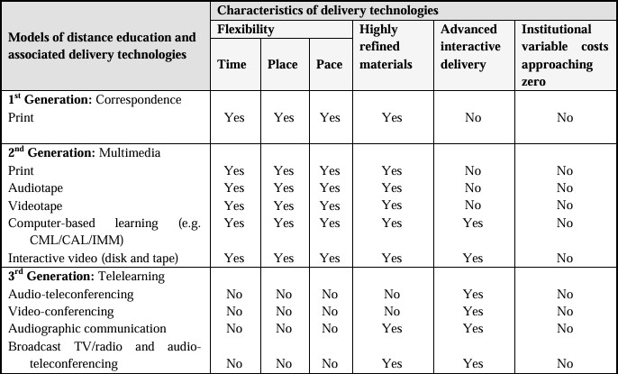

Historical Development
Educational systems in America date back to Puritan landings in 1635, and the schools instructed on relevant material, such as Latin (Crooks). Between 1860 and 1925, America adopted the framework of the modern education system, which continues to resonate today (Davidson 4). However, the American education structure never changed with internet access; it may incorporate various characteristics but only "digitizes nineteenth-century assumptions about standardized learning" (9). McKee reflects on her experiences as a student and an educator, defining distance education through Taylor's five evolutionary stages or generations: correspondence print, multimedia print, telelearning, flexible learning, and intelligent flexible learning (101-102). 
Image Credit: Adapted from McKee, Terralyn. "Thirty Years of Distance Education," based on "Generations of Distance Education" by Taylor (2001).
The first-generation and second-generation distance education models persist into the current stages of remote learning, with the distribution of academic resources and the assumption that the student is responsible for learning. The middling generation, three, is admittedly dated, referencing a learning structure through radio or teleconferencing; however, its definition best fits the synchronous model adopted by schools during the COVID-19 pandemic: "to transmit and participate through a technology that allowed synchronous sharing of voice, data, and graphic images" (104). Between generations three and four, computers reshape the practice of education because the fourth generation is admissible as the asynchronous learning model. McKee claims it "begins to resemble the science-fiction film, The Matrix," and that distanced education lives up to its name as a "disruptive innovation" (105). At this point, it is necessary to delineate the past and the future regarding computers in education. The past is the four generations outlined; the future is the fifth generation, something I compare to science fiction, akin to "Ready Player One" by Ernest Cline. McKee interprets Taylor's definition of the fifth evolution as a "derivation" of the fourth, "integrating all aspects of the educational system, including administration, enrolment, commerce, publishing, and distribution" (106). The American education system does not significantly resemble the structure of Innovative Online Industries (IOI) as denoted in "Ready Player One," therefore, it does not fit my interpretation of the fifth generation.